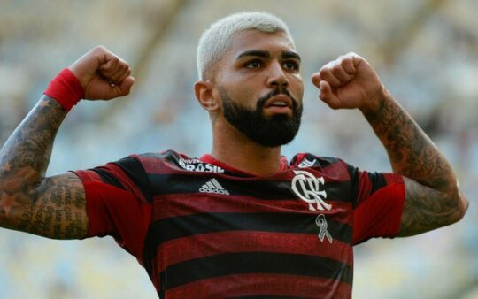

<p>Logo que subiu ao time profissional do Santos Futebol Clube conseguiu ser o artilheiro do time na temporada 2014, ano que também se consagrou artilheiro da Copa do Brasil pelo Alvinegro Praiano.5, com oito gols, foi novamente artilheiro do clube na Copa do Brasil, mas perdendo o título na final, ficando com o vice-campeonato. Na temporada seguinte, em 2016, foi top scorer do Santos no Campeonato Paulista, torneio em que foi campeão.Desse modo, com grande sucesso, a Internazionale de Milão o contratou, clube da Itália ainda em 2016, por 27 milhões de euros. No entanto, em solo italiano não foi feliz, fazendo com que fosse emprestado ao Sport Lisboa e Benfica, em 2017, time o qual atuou em apenas cinco jogos, marcando um único gol. Quando acabou o empréstimo ao clube português, Gabigol retornou ao Santos, ganhou cada vez mais destaque, mas ainda não era suficiente para permanecer na Inter de Milão. Assim, a Inter de Milão que novamente o negociou em 2019, mas agora era para o Flamengo.    Com isso, a história tomou novos rumos para Gabriel Barbosa, que foi herói do Flamengo na Copa Libertadores da América, virando ídolo do time carioca por conquistar o campeonato continental. Além disso, participou e ganhou grande destaque mais uma vez no Campeonato Brasileiro e o Campeonato Carioca em 2019, além da Recopa Sul-Americana e a Supercopa do Brasil em 2020. No entanto, por conta da pandemia do Covid-19, os jogos futebolísticos foram suspensos, o que impediu o jogador de mostrar suas habilidades em campo. Por outro lado, as mudanças no estilo de Gabigol durante a quarentena chamaram muita atenção, o que fez o jogador se destacar por suas inovações no visual.</p>